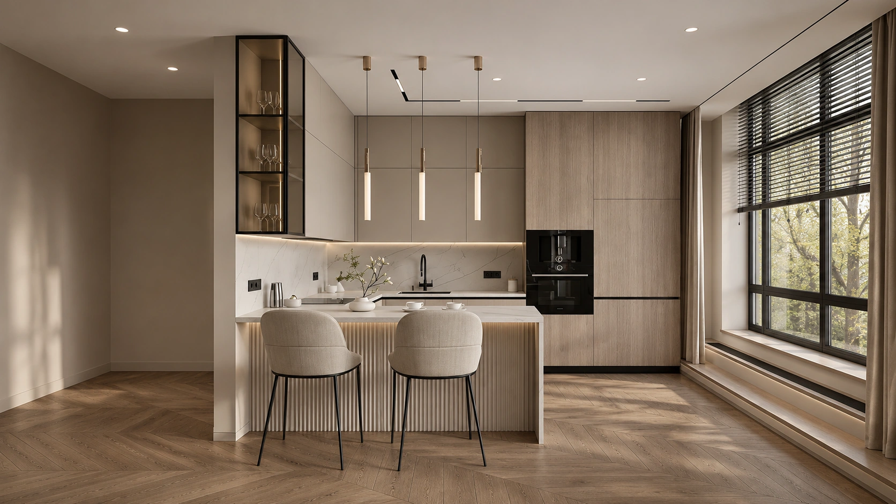
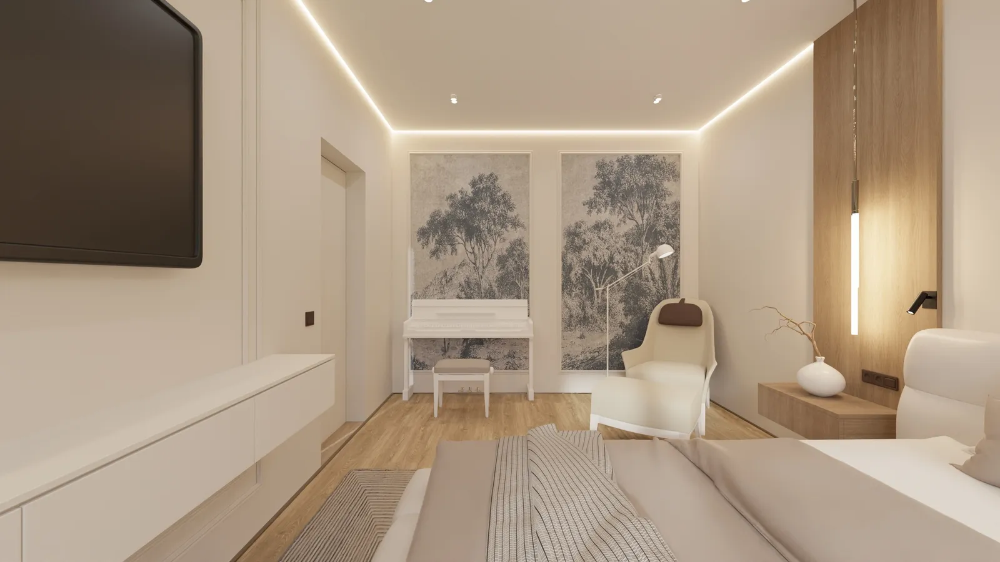
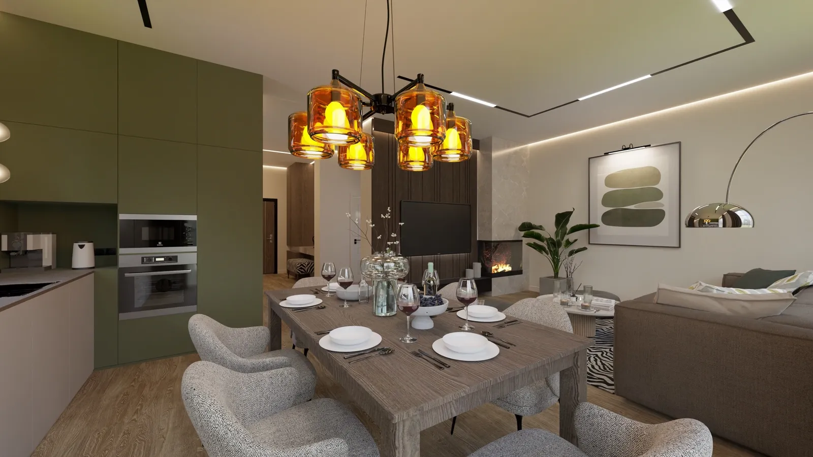
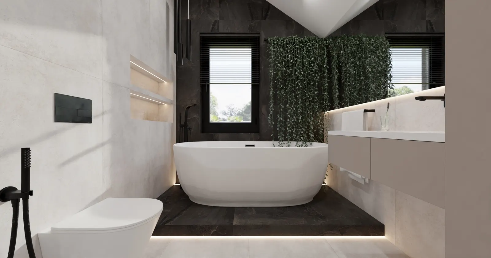
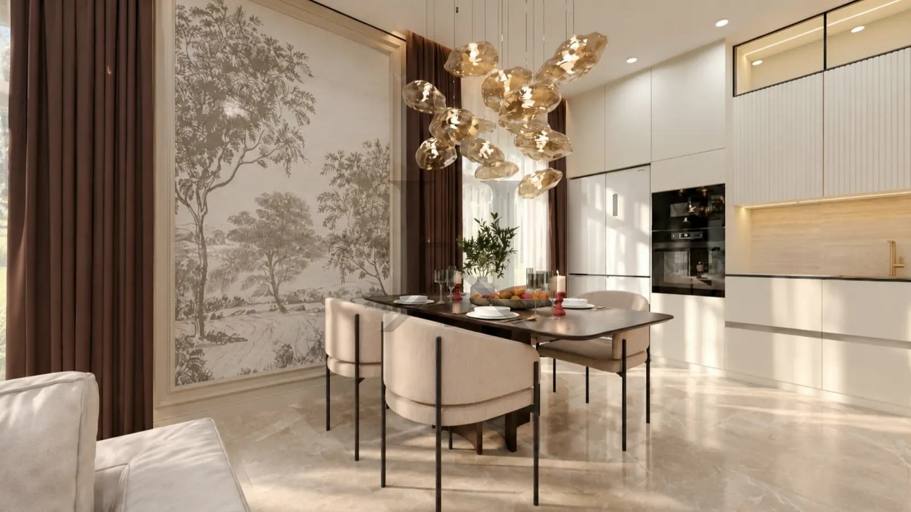
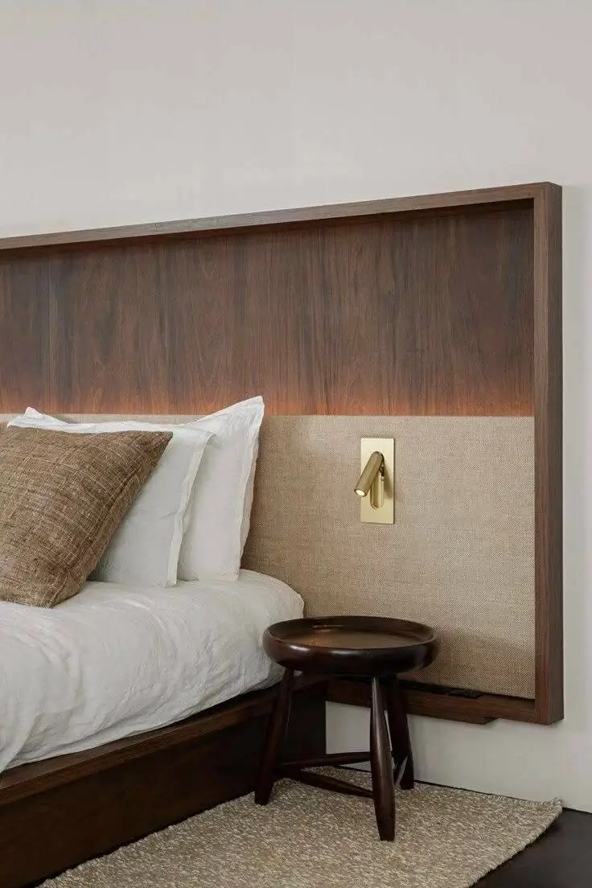

Заказал у них дизайн и ремонт под ключ — и всё супер! Ребята всё понятно объяснили, помогли с материалами, ничего не навязывали. Атмосфера в студии классная — спокойно и по-доброму. Комната получилась именно такая, как я хотел. Однозначно советую!

Нижний Новгород
Обсудить ремонт →РЕМОНТ
С КОТОРОГО НАЧИНАЕТСЯ
ИСТОРИЯ ВАШЕГО ДОМА
 Скидка до 10%
Скидка до 10%на все виды работПри заявке на замер · позвонить→

Ремонт под ключ
для вашей квартиры
От инженерных коммуникаций
до последнего штриха в отделке
Профильные
мастераВнимание
к деталямКомплексный
подходГарантия
по договору
мастераВнимание
к деталямКомплексный
подходГарантия
по договору

Комплексный
дизайн интерьера
Пространство для вашей жизни,
привычек и любимых вещей
Цельная концепция
интерьераПродуманные
решенияДизайн-проект
от 2 500 ₽/м²
интерьераПродуманные
решенияДизайн-проект
от 2 500 ₽/м²
Услуги и цены
Рассчитать смету →
Черновой ремонт
от 4 500 ₽/м²+
Черновой ремонт
от 4 500 ₽/м²+- Стяжка пола
- Штукатурка стен под чистовую отделку
- Замена окон и входной двери
- Электропроводка по проекту
- Разводка канализации и водоснабжения

Ремонт под ключ
от 15 000 ₽/м²+
Ремонт под ключ
от 15 000 ₽/м²+- Демонтаж и перепланировка
- Окна, двери, радиаторы
- Штукатурные и малярные работы, стяжка
- Сантехника, электрика, освещение
- Плитка, обои, напольные покрытия, потолки
- Вывоз мусора и уборка

Санузел под ключ
от 100 000 ₽+
Санузел под ключ
от 100 000 ₽+- Полный демонтаж покрытий
- Замена труб, стояка, полотенцесушителя
- Укладка плитки, запил под 45°
- Установка сантехники, душевой поддон
- Работа по дизайн-проекту

Дизайн-проект
от 2 500 ₽/м²+
Дизайн-проект
от 2 500 ₽/м²+- Обмерный план и перепланировка
- Расстановка мебели, развёртки стен
- Электрика, потолки, тёплые полы, вентиляция
- Каталог мебели и отделочных материалов
- 3D-визуализация будущего интерьера
Смета рассчитывается индивидуально после замера. Нажмите на карточку, чтобы увидеть состав работ.
Проекты и объекты
Больше работ во ВКонтакте →Видеообзоры объектов
Больше видео в группе ВКонтакте →Отзывы клиентов
Делали ремонт под ключ, всё прошло отлично, качественно выполнена работа. Дизайнер Ирина помогла с выбором. Большой ассортимент и уютная атмосфера. Остались довольны, рекомендуем!
Лучшая компания, которую я когда-либо видел, сделали всё быстро и качественно. Хочу поблагодарить Ирину: выслушала и подсказала, что лучше. Всё супер, приду сюда ещё раз.
Очень хочу поблагодарить компанию за хорошую и качественную работу! Сделали очень опрятную, красивую, а самое главное — удобную комнату! Очень добрые и приветливые сотрудники. Очень рада, что наткнулась именно на вашу компанию!
Дизайн был выполнен под ключ. Впечатлила уютная атмосфера. Профессиональный подход. Дизайнер Ирина.
Впечатляющий ассортимент керамической плитки и мозаики. Цены приемлемые и конкурентные, можно найти хорошие варианты и в бюджетном, и в дорогом сегменте. Дизайнеры не задерживают и отвечают на просьбы.
Почему выбирают нас
Опыт
Ремонт квартир, домов
и дизайн интерьеров
Гарантия по договору
На связи и после
сдачи объекта
Специальностей мастеров
Плиточники, электрики,
сантехники и другие
Без доплат
Фиксируем в договоре
после бесплатного замера
На связи
Фотоотчёты каждого этапа
в мессенджер
Скидка на работы
При заявке
на замер

Хороший ремонт
остаётся с вами на годы
От уютной квартиры
до вашего дома
Как мы работаем
Прозрачный процесс на каждом этапеЗнакомство
Обсуждаем вашу квартиру и пожелания к ремонту
Консультация
Разбираем задачи, приоритеты и бюджет
Замер
Изучаем пространство и его особенности
Дизайн-проект
Продумываем планировку, материалы и детали
Ремонт
Воплощаем проект силами профильных мастеров
Готовый дом
Проверяем результат вместе с вами
Сроки ремонта
в днях, точный срок — в договоре после замераКосметическийКапитальныйПо дизайн-проекту
1-комнатная25–50 м²
2-комнатная40–65 м²
3-комнатная50–100 м²
4-комнатная60–200 м²
Дом, коттедж130–500 м²
090180270360 дней
Для каждого дела —
свой профессионал
Несколько бригад и мастера разных специальностей.
Собираем их опыт в один цельный результат.
Плиточные работыЭлектрикаСантехникаОтделкаПокраска и обоиИнженерные коммуникацииМебельПотолкиОкнаДвери
Вопросы и ответы
Задать свой вопрос →Нужно ли мне самому контролировать ход работ?
Нет. Объект ведёт инженер: составляет смету, следит за мастерами и сдаёт работу. Фото и видео каждого этапа присылаем в мессенджер, так что всё видно, даже если вы в другом городе. Приехать на объект можно в любой момент.
Можно купить материалы самим?
Можно. Но гарантию по договору мы даём на работы с нашими материалами: отвечаем за их качество и за то, что они подходят друг к другу. Подбор, закупку и доставку берём на себя, всё согласуем с вами. Если покупаете сами, важно привозить материалы вовремя, чтобы мастера не простаивали.
Какая гарантия на работы?
3 года по договору. Если в этот срок что-то потечёт, отойдёт или треснет по нашей вине, приедем и исправим бесплатно. Связь с нами остаётся и после сдачи объекта.
Что, если не уложитесь в срок?
Срок прописываем в договоре и считаем заранее по объёму работ, с запасом на высыхание стяжки и штукатурки. Мастера разных специальностей работают параллельно, поэтому сроки держим, а бывает, сдаём раньше: квартиру на Оранжерейной сдали на 2 месяца раньше плана. Сдвинуть срок может только изменение проекта по вашему желанию.
Может ли смета вырасти во время ремонта?
Нет. Смету составляем после бесплатного замера и фиксируем в договоре. Меняется она, только если вы сами решите добавить работы или поменять материалы, и тогда сначала согласуем новую сумму, потом делаем.
Зачем страховать квартиру на время ремонта?
Ремонт — это вода, электрика и тяжёлый инструмент. Страховка защищает и вашу квартиру, и вас перед соседями: если случится протечка или пожар, ущерб покроет страховая.
Как можно оплатить?
Картой, наличными или в рассрочку.
Дизайнер сделает интерьер в любом стиле?
Да, от минимализма до классики, под вашу семью, привычки и бюджет. Можно заказать базовый проект (планировка, расстановка мебели, подборка стиля) или полный, с чертежами для мастеров, каталогом материалов и 3D-визуализацией. Работаем и дистанционно: делали проекты для заказчиков из Новосибирска и Казани.
Делаете только черновой ремонт?
Да: стяжка, штукатурка, электрика, разводка воды и канализации, окна и входная дверь. Удобно, если чистовую отделку хотите делать позже. Это самый важный этап, от него зависит, сколько прослужит весь ремонт.
Можно отремонтировать только одну комнату?
Можно. Делаем отдельно санузел, кухню, детскую или любое другое помещение. Позвоните, мы приедем на замер и посчитаем стоимость.
Наследие ремонта · Нижний Новгород